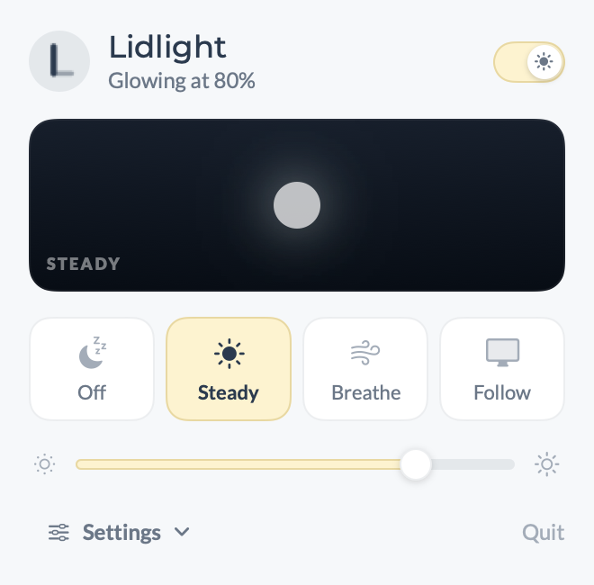
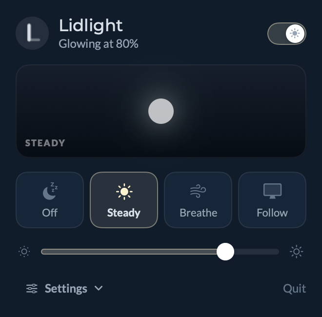
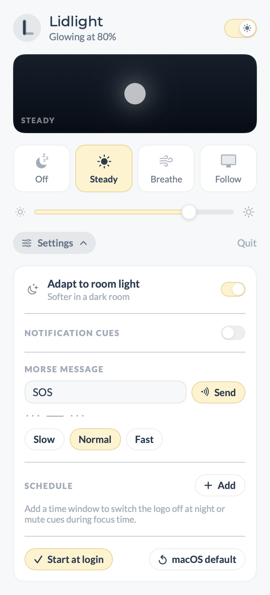
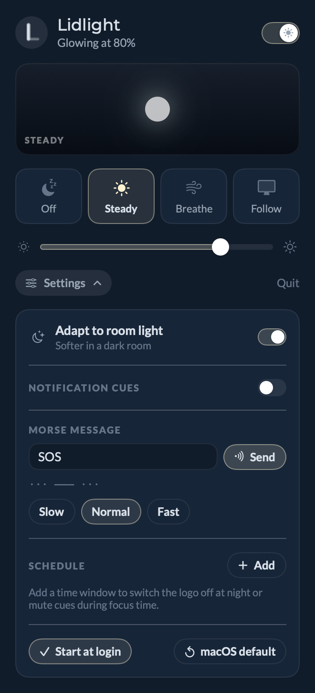

Lidlight turns the logo on your lid into a quiet signal. It breathes while you focus, blinks when Claude is done or mail lands, switches off at night, and spells out messages in Morse.
Lives in your menu bar · 0% CPU · keeps its look after you quit
Pick a state from the menu bar and set how bright. Everything else waits in the settings drawer.
Dark lid for movies, meetings and late nights. Stays dark after Lidlight quits.
A fixed glow at the brightness you choose, whatever the screen is doing.
A seamless rise from dark to your brightness and back: Slow, Calm or Quick. macOS draws the fade, so Lidlight sits at 0% CPU.
The stock macOS behaviour: the logo tracks your display brightness.
The logo is one white light, so every signal has its own rhythm instead of a colour. Choose the rhythm for each one.
| Cue | Default pattern | Triggered by |
|---|---|---|
| Claude finished | Double swell | Claude Code Stop hook |
| Claude needs you | Triple blink | Permission prompts and waiting for input |
| New email | Heartbeat | Unread badge rises in Outlook or Mail |
| New chat message | Long pulse | Unread badge rises in Teams, Slack or Messages |
| Alert | Beacon | Anything you script: lidlight cue alert |
Write a message and the logo sends it in standard Morse timing: dot, dash three times as long, letters and words spaced out. Slow, Normal or Fast. From a script: lidlight morse "back in 5".
Switch the logo off from 22:00 to 08:00, keep it breathing during focus time, or mute cues in meetings. Each window picks a mode and whether cues are allowed. Picking a mode by hand pauses the window until it ends.
H is four dots, I is two. At Normal speed a dot is a quarter of a second.
On/off, a live mirror of the lid, four states and one slider. Room light, speed, signals, Morse and the schedule live in the drawer.




The logo is lit by a single PWM channel (bklb-backlight). There is no red, green or blue to mix, and no zones, so it can't fill from one side to the other. Lidlight makes the most of rhythm and brightness instead.
Every pattern was measured on the hardware. macOS ignores a turn-off that dims faster than about 5,000 nits a second, so Lidlight stretches fade-outs just enough that no blink gets lost.
With room light on, macOS's own sensor limits keep the logo soft in a dark room (about 18% at most). Turn it off for exact levels.
No root, no kernel extension, no polling. Lidlight measures 0.0% CPU steady and breathing; macOS's own fade engine uses about 2% while a breath is running.
The last look stays on the logo after Lidlight quits. It starts at login and puts your settings back after sleep.
lidlight cue mail.corebrightnessd through CoreBrightness (LEPWMBrightnessNitsMapping, LEPWMFactorFadeDuration).Needs a MacBook Pro with a lit lid logo and the Xcode command line tools. Tested on Mac17,13 (M5 Pro) with macOS 27.2.
./build.shInstalls ~/Applications/Lidlight.app and the lidlight command in ~/.local/bin. Claude Code hooks call lidlight cue when a task ends or needs you.
lidlight cue claude-done
lidlight off
lidlight level 40
lidlight breathe 4
lidlight morse "on a call"
open -g "lidlight://cue/mail" # for ShortcutsNo. The hardware has one white light with no zones. Anything teal you've seen was an on-screen preview, not the LED.
It uses private macOS frameworks, so a macOS update can change them. "macOS default" in the drawer hands the logo back at any time.
No. It only reads the unread number on Dock icons, and only for apps you switch on.